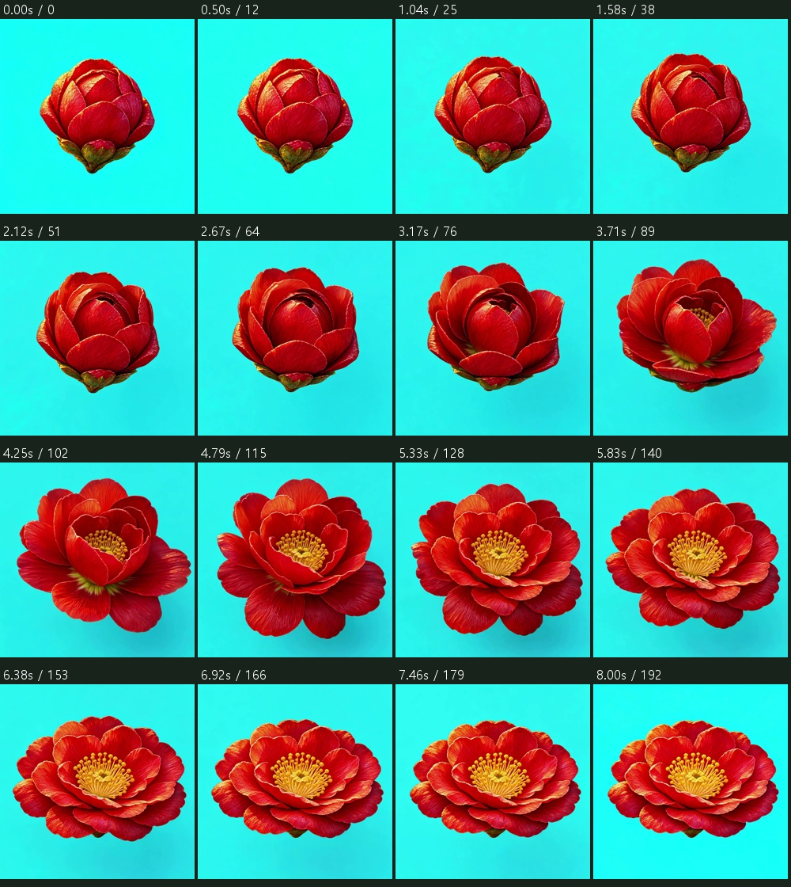
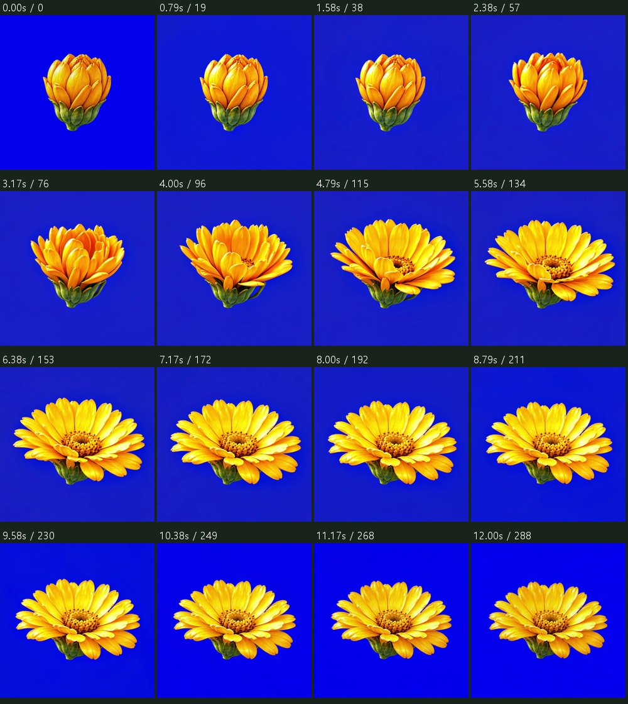
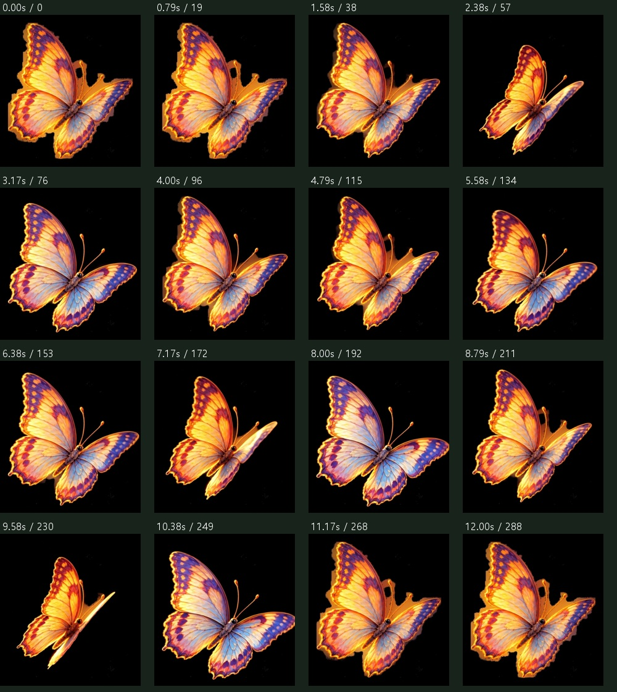
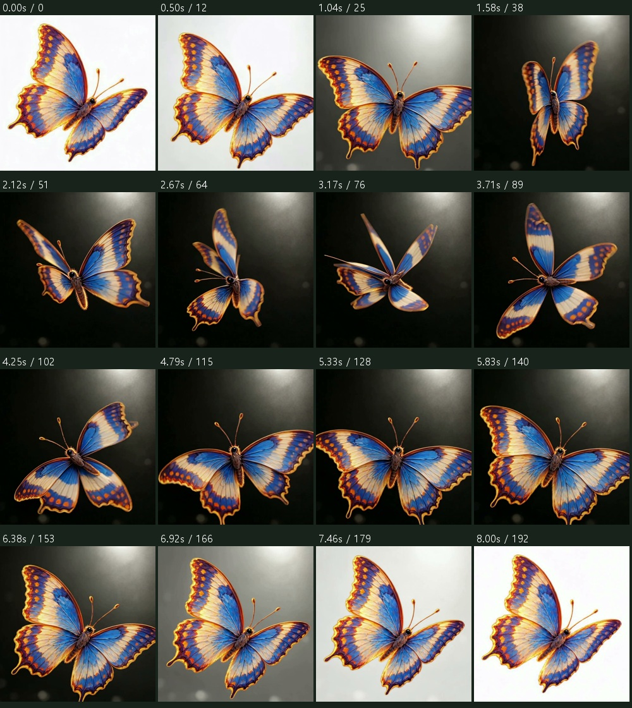
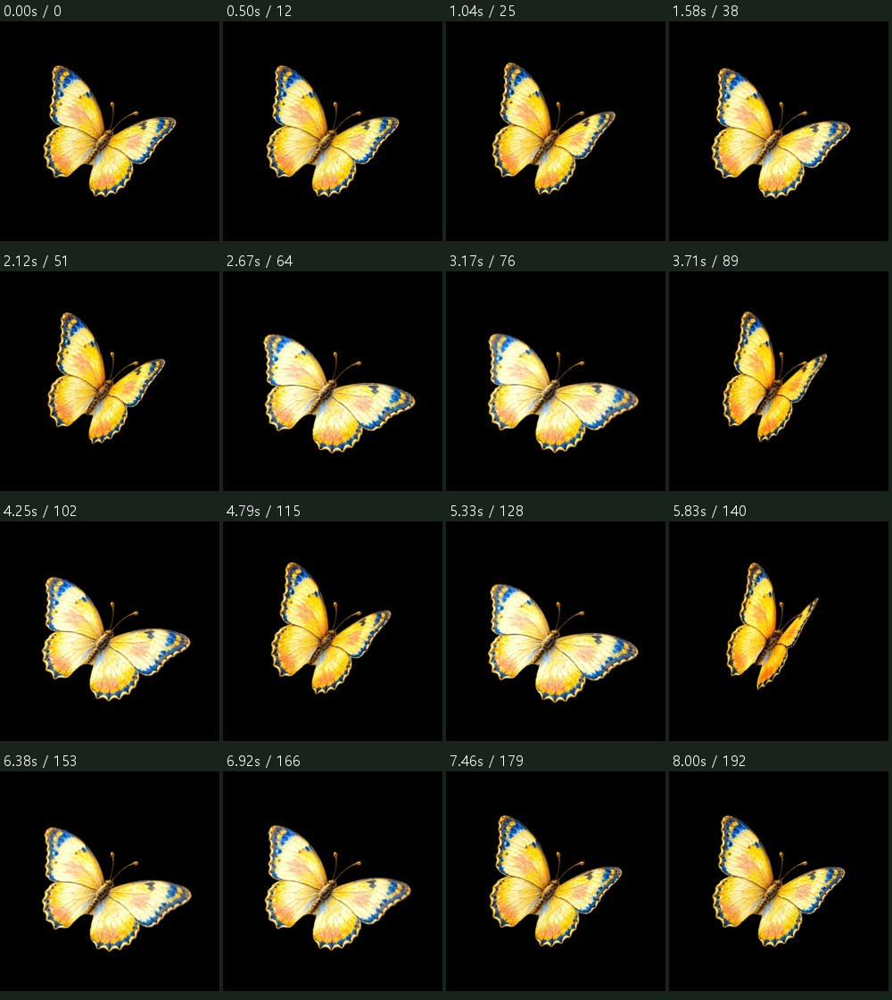

01 노을 · 레드 · 동백꽃 A · 진홍
BG01 / LT01 · seedance1_5 · 8.04초 · 원본 [960, 960]
Cyan background varies and develops a gradient, with corner channel ranges26,12,14. Anatomy not final approved. No automatic paid retry.
16시점 비교

2026.10.22 · 승인 상한 288크레딧 · 대표 검수 후 순차 제작. 꽃은 봉오리→만개 한 방향만 제작합니다. 현재 생성 원본과 후처리 후보를 구분해 보여줍니다. 불합격본은 전시 적용·업스케일 대상에서 제외합니다.
이번에 새로 생성한 봉오리→만개 원본에서 각 프레임을 AI로 분리했습니다. 원본 RGB·개화 동작은 보존했습니다. 아래 두 파일은 후처리 후보이며 새 개화 영상 생성으로 대신 표시하지 않습니다. 960×960 · 24fps · PNG 193장 · 최종 시각 승인 전.
검증한 단색 1024px 원본을 사용한 새 생성본입니다. 중간의 실제 35프레임 주기를 선택했으며, 역재생·페이드·보간·프레임 재정렬은 사용하지 않았습니다. 10회 정상 속도 반복 검수 전입니다.
BG01 / LT01 · seedance1_5 · 8.04초 · 원본 [960, 960]
Cyan background varies and develops a gradient, with corner channel ranges26,12,14. Anatomy not final approved. No automatic paid retry.

BG02 / LT02 · kling_o3_flf · 12.04초 · 원본 [960, 960]
불합격: 파란 키 배경이 변하고, 중간 약 4초에 꽃받침에서 입력에 없는 긴 초록 고리가 생깁니다. 전시·알파 납품에서 제외하며 유료 자동 재시도하지 않습니다.

BG01 / LT01 · kling_o3_flf · 12.04초 · 원본 [924, 996]
Body position and scale change; first approximately1.5sec held; a thick extra orange appendage appears; native924x996 canvas differs from requested1:1. No auto rerun.

BG01 / LT01 · seedance1_5 · 8.04초 · 원본 [960, 960]
Transparent preview URL was submitted instead of expected RGB1024 input. Background becomes white, scene light appears and body turns/travels. Invalid for in-place loop; excluded.

BG02 / LT02 · kling_o3_flf · 8.04초 · 원본 [960, 960]
영상 생성 완료 · 시각 검토 중

나머지 항목은 대표 품질 검수 후 진행합니다. 사용자 컨펌 전 업스케일·자동 유료 재시도는 하지 않습니다. PNG 알파와 Unity 실장비 검증 상태는 별도로 기록합니다.